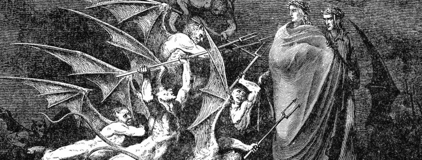

TODO EL LORE
Índice
Fue nombrado Popopo y el juego donde iba a aparecer se llamaría "Twinkle Popopo", más tarde el personaje pasaría a llamarse Kirby y la franquicia en Japón se nombró como Hoshi no Kaabii. Se desconocía por qué se le cambió el nombre al personaje, hay diversas teorías de las cuales destacan que su nombre proviene de la empresa Kirby Corporation, una empresa de aspiradoras y de ahí su habilidad de inhalar, también habían rumores que indican que su nombre es honor al asesor jurídico de Nintendo, John Kirby, de Latham & Watkins LLP, quien salvó a Nintendo de una demanda de infrigimiento de derechos de autor sobre Donkey Kong presentada por Universal Studios, esta última resultó ser medianamente cierta ya que Shigeru Miyamoto ha declarado que al buscar un nuevo nombre para el personaje en una lista se toparon con el de 'Kirby' y le pareció gracioso que el personaje tuviera alguna conexión con el abogado, y de igual forma otro factor que influye en esta decisión fue que en Japón se le suele poner nombres con sonidos suaves a personajes lindos, pero Miyamoto pensó que 'Kirby' tenía sonidos duros por lo que le resulto divertido ponerle este nombre a la bola rosada.[1] También se llegó a sugerir el nombre "Gasper"
Golden Freddy appears to be a cross between Freddy Fazbear and Fredbear with missing eyes. In the first game, he sports a black bowtie and top hat similar to Freddy, and upon closer inspection a microphone can be seen lying on his right palm, as well as two pinprick white dot-like pupils within his otherwise empty eye sockets. He sits in a slouched position as if he were deceased, with his jaw hanging open and his paws facing palms up. Despite popular belief, he has an endoskeleton that can be easily seen by looking at the arms. If one looks at the arms, a few wires and parts of the endoskeleton are visible, which share the same coloration as his accessories, though this may just be cords holding together the separate pieces of his suit.
The Doom Marine was originally a human from Earth who served in the Marines and was dishonorably discharged due to assaulting his commanding officer after refusing to fire upon a crowd of unarmed civilians and was later transferred to the UAC Phobos base as security. The Marine soon found himself trying to prevent the demons of Hell from invading Earth. After having fought demonic hordes through Phobos, Deimos and Hell, he returned home to find Earth overrun by demons and his wife, child, and pet rabbit Daisy, among the billions of people killed, giving him further reason to pursue hunting the demons. He continued fighting the horde on Earth, before taking the fight to Hell once more. At some point, he somehow became stranded on the world of Argent D'Nur, ending up in a different dimension entirely after his indefinite stay in Hell (He was possibly sent there by demons, like the Resurrector sent him to Earth in Doom 64). There he is captured by the world's inhabitants, the Argenta, and brought before the Order of the Deag in Sentinel Prime. The Argenta were unable to understand his language and he was incoherent, as his mind was crippled with rage, and he only talked about demons. (Amusingly, they described his English as an "ugly tongue".) The Priests decided to put him through a trial by combat in the Blood Arena in order to judge on whether he would gain his freedom. Eventually, the Marine (dubbed as the "Outlander" by the Argenta) proved himself to be extraordinarily skilled and earning the admiration of the Argenta.[10] This garnered the attention of the clergy and ruling powers of Argent D'Nur, including the Khan Maykr herself, and despite being an outlander he was taken in and trained in their military, serving to spread the teachings of the Maykr race. Inevitably, Argent D'Nur was invaded by the demons and the Marine immediately entered the fight; in which his fervor for their destruction soon caught the attention of King Novik, who deemed him worthy to join the Night Sentinels. Initially the traditionalists of the Night Sentinels were very reluctant to allow the man into their ranks, as the Order forbids from having Arena-borne prisoners or foreigners. But over time, the Outlander earned their utmost respects as he proved his skills and unwavering determination at slaying Hell's demonic legions and becoming the Order's brother-in-arms.[11]The Marine participated in a pivotal battle against the Dreadnought, a monstrous Titan sent to lead a total demonic assault on the heart of Argent D'Nur. As the Sentinels were nearly overwhelmed by the demons, the Marine was approached by a Maykr, known as the Seraphim, who offered his help to defeat the Dreadnought. He was brought to the Chapel of Purity and submitted to the Divinity Machine, blessing him with fierce speed and great power to match his will. Using his newfound powers, the Marine took the Crucible, a weapon held for a true Sentinel warrior king,and using it to slay the Dreadnought and planting the blade inside the beast's heart. Since then, the Sentinels deemed the Marine as a chosen hero, and he gained his (in)famous title: the Doom Slayer.[12]
Arthur Shelby Jr. was born to a Romani and Irish Traveller family. Growing up, Arthur regularily wrestled with his siblings and was known as the strongest. He once got beaten by Tommy, he also once held off 12 police officers with a boat hook, showing that he let Tommy win. It is implied he had anger issues as a child and got into many fights. During the war in France, Arthur was a Sapper with his brother Thomas, digging very treacherous tunnels in order to place enormous amount of explosives under the enemy positions: a tactic used several times in the war to devastating effect at both the Battle of Verdun and the Battle of the Somme. It is suggested he may have served at Gallipoli through his distaste for Turks and the smell of stagnant water.
The Bible provides abundant evidence of the existence of demons. Satan’s evil angels are known in Scripture as demons. We know from certain Scriptures that Satan fell from heaven and other angelic beings (demons) shared in Satan’s fall and became evil (Ezekiel 28:18; Matthew 25:41; Revelation 12:4).The word for demons in the Greek language is daimon and is found more than 75 times in the Greek New Testament. In each case it is translated by the word devil in the King James Version.In Jesus Christ’s teachings and ministry He often confronted demons and their activities, i.e., demonic possession of individuals (Matthew 12:22-29, 15:22-28, 25:41; Mark 5:1-16). Christ demonstrated His power over demons and, furthermore, He gave His disciples power to cast out demons (Matthew 10:1). (ANGELS ELECT AND EVIL, C. Fred Dickason, p. 150). 